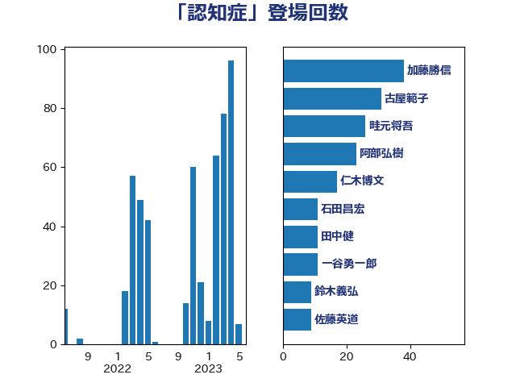

単語「認知症」

| 加藤勝信 | 自由民主党 | 38 回 |
| 古屋範子 | 公明党 | 31 回 |
| 畦元将吾 | 自由民主党 | 26 回 |
| 阿部弘樹 | 日本維新の会 | 23 回 |
| 仁木博文 | 無所属 | 17 回 |
| 石田昌宏 | 自由民主党 | 11 回 |
| 田中健 | 国民民主党 | 11 回 |
| 一谷勇一郎 | 日本維新の会 | 11 回 |
| 鈴木義弘 | 国民民主党 | 9 回 |
| 佐藤英道 | 公明党 | 9 回 |
| 長友慎治 | 国民民主党 | 8 回 |
| 國重徹 | 公明党 | 8 回 |
| 阿部司 | 日本維新の会 | 7 回 |
| 田村まみ | 国民民主党 | 7 回 |
| 田中昌史 | 自由民主党 | 7 回 |
| 井坂信彦 | 立憲民主党 | 6 回 |
| 金子恭之 | 自由民主党 | 5 回 |
| 西岡秀子 | 国民民主党 | 5 回 |
| 若宮健嗣 | 自由民主党 | 5 回 |
| 伊佐進一 | 公明党 | 5 回 |
| 芳賀道也 | 国民民主党 | 4 回 |
| 石橋通宏 | 立憲民主党 | 4 回 |
| 梅村みずほ | 日本維新の会 | 4 回 |
| 東徹 | 日本維新の会 | 4 回 |
| 打越さく良 | 立憲民主党 | 4 回 |
| 後藤茂之 | 自由民主党 | 4 回 |
| 里見隆治 | 公明党 | 3 回 |
| 浜田聡 | NHK党 | 3 回 |
| 早稲田ゆき | 立憲民主党 | 3 回 |
| 庄子賢一 | 公明党 | 3 回 |
| 岸田文雄 | 自由民主党 | 3 回 |
| 堤かなめ | 立憲民主党 | 3 回 |
| 倉林明子 | 日本共産党 | 3 回 |
| 伊藤岳 | 日本共産党 | 3 回 |
| 高橋千鶴子 | 日本共産党 | 2 回 |
| 萩生田光一 | 自由民主党 | 2 回 |
| 石井苗子 | 日本維新の会 | 2 回 |
| 石井正弘 | 自由民主党 | 2 回 |
| 石井啓一 | 公明党 | 2 回 |
| 玉木雄一郎 | 国民民主党 | 2 回 |
| 梅村聡 | 日本維新の会 | 2 回 |
| 掘井健智 | 日本維新の会 | 2 回 |
| 平山佐知子 | 無所属 | 2 回 |
| 山下貴司 | 自由民主党 | 2 回 |
| 小川淳也 | 立憲民主党 | 2 回 |
| 宮本徹 | 日本共産党 | 2 回 |
| 吉田久美子 | 公明党 | 2 回 |
| 伴野豊 | 立憲民主党 | 2 回 |
| 高木真理 | 立憲民主党 | 1 回 |
| 高木毅 | 自由民主党 | 1 回 |
| 高木かおり | 日本維新の会 | 1 回 |
| 長妻昭 | 立憲民主党 | 1 回 |
| 遠藤良太 | 日本維新の会 | 1 回 |
| 角田秀穂 | 公明党 | 1 回 |
| 西田実仁 | 公明党 | 1 回 |
| 西村智奈美 | 立憲民主党 | 1 回 |
| 緒方林太郎 | 無所属 | 1 回 |
| 窪田哲也 | 公明党 | 1 回 |
| 稲田朋美 | 自由民主党 | 1 回 |
| 田村憲久 | 自由民主党 | 1 回 |
| 熊田裕通 | 自由民主党 | 1 回 |
| 湯原俊二 | 立憲民主党 | 1 回 |
| 浅田均 | 日本維新の会 | 1 回 |
| 泉健太 | 立憲民主党 | 1 回 |
| 池下卓 | 日本維新の会 | 1 回 |
| 水野素子 | 立憲民主党 | 1 回 |
| 比嘉奈津美 | 自由民主党 | 1 回 |
| 櫻井充 | 自由民主党 | 1 回 |
| 本村伸子 | 日本共産党 | 1 回 |
| 末松信介 | 自由民主党 | 1 回 |
| 星北斗 | 自由民主党 | 1 回 |
| 工藤彰三 | 自由民主党 | 1 回 |
| 川田龍平 | 立憲民主党 | 1 回 |
| 山本香苗 | 公明党 | 1 回 |
| 小倉將信 | 自由民主党 | 1 回 |
| 寺田学 | 立憲民主党 | 1 回 |
| 天畠大輔 | れいわ新選組 | 1 回 |
| 古庄玄知 | 自由民主党 | 1 回 |
| 勝目康 | 自由民主党 | 1 回 |
| 伊藤孝恵 | 国民民主党 | 1 回 |
| 中条きよし | 日本維新の会 | 1 回 |
| 中川貴元 | 自由民主党 | 1 回 |
| おおつき紅葉 | 立憲民主党 | 1 回 |